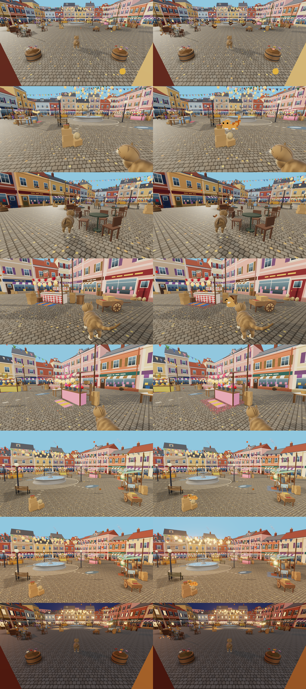

Left: before. Right: after. Rows: (1) arrival at the gate: pigeons flutter up and a puff of petals rises from the gate tubs; (2) the sleepy tabby on the crates by the bench, stretching as she passes; (3) sparrows at the café flying up as she comes near; (4) the dog tied up beside the butcher's; (5) butterflies at the flower stall, and the stall's pink woven cloth on the cobbles; (6) the card view at midday; (7) the same view as evening closes in (awnings and counters dim and cool, lanterns glow brighter, bunting dims); (8) a dusk walk's spawn. Stall colours now run into the bunting nearest each stall and a woven cloth under it; the paw, fish and mouse flags are 30% larger. The creatures are small pixel pictures (one pooled Points, no triangle): they are subtle at play distance, and the sparrows and butterflies are hard to spot in a still.
